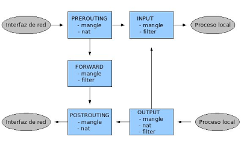
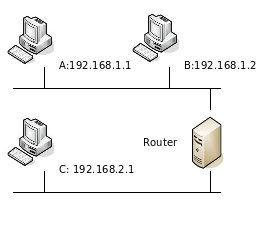

Apunts IPTables
Iptables, un manual senzill
Firewall
Un tallafocs (firewall) és un dispositiu de hardware o software que té com a objectiu protegir una xarxa d'altres xarxes a les quals està connectat. El tallafocs es configura amb una sèrie de regles que determinen el trànsit que pot passar d'una xarxa a una altra i el trànsit que ha de ser bloquejat.
Per comprendre el funcionament d'un tallafocs, podem pensar en com realitzen la seva feina els guàrdies de seguretat d'una discoteca. Els propietaris del local estableixen els criteris que ha de complir un client potencial per poder passar a la sala i, cada vegada que algú arriba a la porta, el porter l'avalua:
- si compleix els criteris → passa
- si no els compleix → no passa
A la següent figura es representa l'esquema d'una xarxa d'ordinadors que utilitza un tallafocs per protegir la xarxa local de la xarxa externa:

Es poden construir tallafocs més sofisticats, que incloguen equips separats de la resta de la xarxa local (DMZ: Zona Desmilitaritzada) per augmentar encara més la seguretat. De fet, en les grans corporacions, és possible trobar instal·lacions amb més d'un tallafocs, que separen els equips de diferents àrees de l'empresa.
1. Linux com a tallafocs
El nucli de les màquines GNU/Linux incorpora el framework Netfilter, que permet interceptar i manipular paquets de xarxa. A més, en l'espai d'usuari, l'administrador pot usar iptables per establir les regles del tallafocs.
iptables
iptables s'utilitza per crear, mantenir i revisar les taules de filtratge de paquets en el nucli de Linux, i s'estructura de la següent manera:
- Existeixen diferents taules (tables) dins de les quals pot haver-hi diverses cadenes (chains).
- Cada cadena consisteix en una llista de regles amb les quals es comparen els paquets que passen pel tallafocs. Les regles especifiquen què es fa amb els paquets que s'ajusten a elles (target).
Per a cada paquet que rep el tallafocs, s'examina la primera regla de la cadena corresponent. Si el paquet no s'ajusta a aquesta regla, es continua examinant la següent fins que s'ajusti amb alguna. En aquell moment s'executa el target:
- DROP: el paquet es descarta, no pot passar
- ACCEPT: el paquet continua el seu camí normal
Si s'arriba al final d'una cadena predefinida s'executa un target per defecte, anomenat política de cadena (chain policy). La política de cadena estableix, per tant, la política per defecte del nostre tallafocs.
Taules
Com dèiem, en iptables existeixen diverses taules, que tenen diferents objectius:
- La taula filter és la taula per defecte, i s'utilitza per especificar filtres de paquets. Conté 3 cadenes predefinides:
- INPUT: Es consulta per als paquets que van dirigits al propi tallafocs.
- FORWARD: La travessen els paquets enrutats a través d'aquesta màquina, és a dir, aquells paquets en els quals l'origen i el destí són equips de xarxes diferents.
- OUTPUT: Per a paquets generats localment.
- La taula nat es consulta cada vegada que es veu un paquet que inicia una nova connexió, amb l'objectiu de modificar algun paràmetre d'aquella connexió. Té 3 cadenes predefinides:
- PREROUTING: es consulta amb els paquets que entren a la màquina tallafocs, tan aviat com arriben, abans de decidir què fer amb ells.
- OUTPUT: s'utilitza per alterar paquets generats localment, abans de rutar-los.
- POSTROUTING: per alterar els paquets que estan a punt de sortir de la màquina.
- La taula mangle és una taula especial, destinada a alterar determinats paràmetres dels paquets (TOS, TTL …), que s'utilitza per realitzar configuracions complexes del tallafocs. Comptarà amb 5 cadenes predefinides: INPUT, OUTPUT, PREROUTING, POSTROUTING I FORWARD.
Fluix dels paquets a través d'iptables
Veiem tots els possibles camins que un paquet pot seguir al travessar el nostre tallafocs.

Veiem el camí que seguiria, per exemple, un paquet que s'origina a la nostra xarxa local i va destinat a una màquina d'Internet:
- El paquet entra al tallafocs per una interfície de xarxa, per tant, primer es comprovarien les regles de la cadena PREROUTING.
- A continuació es comprovarien les regles de la cadena FORWARD, ja que el paquet no va destinat a un procés del tallafocs, sinó que va a travessar-lo, sortint per la interfície que el connecta amb la xarxa externa.
- Finalment, si el paquet no ha estat filtrat i continua endavant, abans de sortir del tallafocs per l'altra interfície de xarxa, es comproven les regles de la cadena POSTROUTING.
Comandos de configuració
Anem a explicar, a continuació, els comandos bàsics de configuració d'iptables. Veurem algun exemple senzill, i acabarem amb un exemple complet de configuració d'un tallafocs amb DMZ.
Llistat de regles
| Bash | |
|---|---|
Mostra un llistat de totes les regles d'una cadena, o de totes elles. Les opcions disponibles són:
- -v: informació detallada d'una regla
- -N: crear una nova cadena
- -X: Esborrar una cadena buida
Esborrat de comptadors
| Bash | |
|---|---|
Esborra els comptadors d'una determinada cadena, o de totes elles. És habitual col·locar aquest comandament al principi de tots els scripts de configuració, per esborrar les regles que existien prèviament. Es pot combinar amb l'opció -L per mostrar la informació just abans d'esborrar-la.
Esborrat de totes les regles
| Bash | |
|---|---|
Esborra les regles d'una determinada cadena o de totes elles.
Creació i esborrat de regles
| Bash | |
|---|---|
Les opcions són les següents:
- -A: afegeix una regla al final de la llista
- -I: insereix una regla al començament de la llista o en el punt especificat
- -R: reemplaça una regla (especificada pel seu número de regla) per una altra
- -D: esborra una regla determinada
Per especificar una regla podem usar els següents paràmetres:
- -p [!] protocol: el protocol del paquet a comprovar. Pot ser ‘tcp’, ‘udp’, ‘icmp’ o ‘all’.
- -[sd] [!] adreça[/màscara]: adreça ip origen (s) o destí (d) del paquet.
- -[io] [!] iface: nom de la interfície d'entrada (i) o de sortida (o) del paquet.
- -j target: especifica el target d'aquesta regla. Pot ser una acció predefinida (ACCEPT, DROP), una extensió o el nom d'una cadena.
Establiment d'una política per defecte
| Bash | |
|---|---|
Estableix el target que s'executarà per als paquets que no compleixin cap regla de la cadena especificada.
2. Un exemple senzill
Amb aquests comandaments bàsics de configuració ja podem resoldre molts dels problemes amb els quals es troba una empresa al exposar els seus sistemes d'informació a Internet. Anem a veure un exemple senzill per entendre com s'han d'escriure les regles en iptables. Observem la figura 3, que representa una instal·lació senzilla, amb una màquina que actua com a router i tallafocs connectant dues xarxes diferents.

Suposem que volem que només la màquina B puga parlar amb C, i a més només puga usar el protocol TCP. Els paquets de la xarxa A no han d'accedir a la màquina C, i no volem que l'usuari de B puga accedir a la màquina A. En aquest escenari, no volem exposar la màquina A a Internet, així que definirem les següents regles:
| Bash | |
|---|---|
Amb això, ja tenim la màquina B connectada amb la màquina C. Encara podem permetre l'accés a la màquina C des d'Internet, i prohibir l'accés a la màquina A. Veiem com implementar-ho:
| Bash | |
|---|---|
A partir d'aquest moment, la màquina B pot accedir a la màquina C, i la màquina C està accessible des d'Internet. La màquina A no pot ser accedida des de cap lloc.
3. Exemple complet amb DMZ
A l'últim exemple, construirem un tallafocs que contindrà una DMZ. La xarxa es veurà així:

El tallafocs estarà format per tres interfícies de xarxa:
- INTERFÍCIE_EXTERNA: connecta amb Internet.
- INTERFÍCIE_DMZ: connecta amb la DMZ (servidor web i servidor de correu).
- INTERFÍCIE_INTERNA: connecta amb la xarxa interna de l'empresa.
El tallafocs ha de ser capaç de controlar les comunicacions de les xarxes internes amb la DMZ, així com les comunicacions de la DMZ amb Internet. Les regles seran:
Amb això, hem aconseguit una bona configuració inicial d'un tallafocs. Tot i això, cal tenir en compte que aquesta és una configuració bàsica, i que en una instal·lació real seria convenient aplicar estratègies de seguretat addicionals.